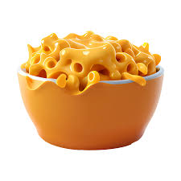

Mac&Cheese Recipe
List of content
- Image
- Description
- Ingredients
- Steps
Image:

Discription:
Mac and cheese is a rich and creamy dish consisting of macaroni pasta mixed with a cheesy sauce. It's particularly popular in the United States.
Ingredients(Basic):
- Macaroni: This homemade mac and cheese starts with a box of uncooked macaroni noodles
- Butter and flour: You'll need butter and flour to make a roux for the cheese sauce. You'll also need two tablespoons of butter for the topping
- Milk: Use whole milk for the richest flavor and texture
- Cheese: This baked mac and cheese recipe calls for Cheddar and Parmesan cheeses
- Seasonings: Salt and pepper goes into the sauce, while paprika is sprinkled over the topping.
- Bread crumbs: Use store-bought dried bread crumbs or make your own at home.
Ingredients(All):
Macaroni and Cheese;
- 8 ounces uncooked elbow macaroni
- ¼ cup salted butter
- 3 tablespoons all-purpose flour
- 2 ½ cups milk, or more as needed
- 2 cups shredded sharp Cheddar cheese
- ½ cup finely grated Parmesan cheese
- alt and ground black pepper to taste (Optional)
Bread Crumb Topping;
- 2 tablespoons salted butter
- ½ cup dry bread crumbs
- 1 pinch ground paprika
Directions(Step by Step):
- Preheat the oven to 350 degrees F (175 degrees C). Grease an 8-inch square baking dish.
- Make the macaroni and cheese: Bring a large pot of lightly salted water to a boil. Add macaroni and simmer, stirring occasionally, until tender yet firm to the bite, about 8 minutes; it will finish cooking in the oven. Drain and transfer to the prepared baking dish.
- While the macaroni is cooking, melt 1/4 cup butter in a medium skillet over low heat. Whisk in flour and stir until the mixture becomes paste-like and light golden brown, 3 to 5 minutes.
- Gradually whisk 2 1/2 cups milk into the flour mixture, and bring to a simmer. Stir in shredded Cheddar and finely grated Parmesan cheeses; season with salt and pepper. Cook and stir over low heat until cheese is melted and sauce has thickened, 3 to 5 minutes, adding up to 1/2 cup more milk if needed. Pour cheese sauce over macaroni and stir until well combined.
- Make the bread crumb topping: Melt 2 tablespoons butter in a skillet over medium heat. Add bread crumbs; cook and stir until well coated and browned. Spread bread crumbs over macaroni and cheese, then sprinkle with paprika.
- Bake in the preheated oven until topping is golden brown and macaroni and cheese is bubbling, about 30 minutes.